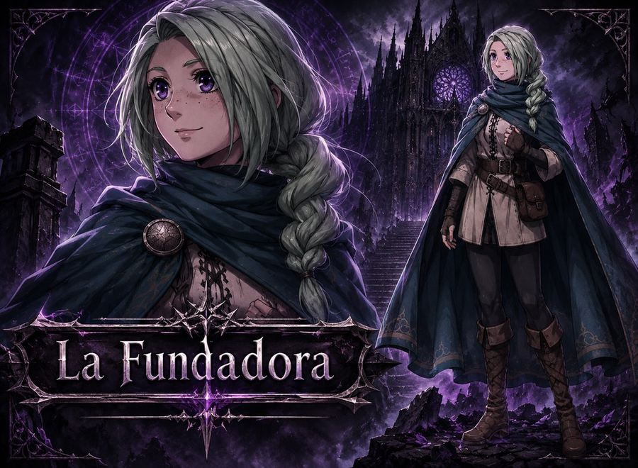

La Fundadora
Creadora de Narak´ZulLa anciana del lienzo, devuelta a la juventud en el mundo que imaginó. Todos la adoran como a una diosa; ella sabe que las aberraciones que lo infestan salieron de su propio miedo. Camina por su creación buscando la forma de arreglarla.